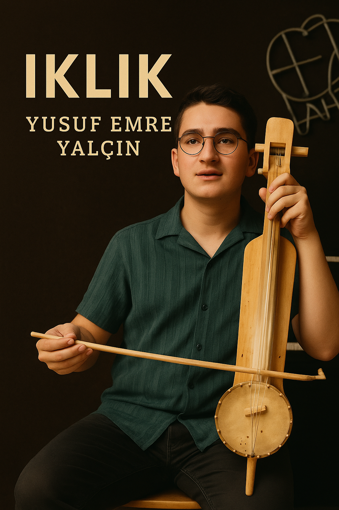

Foto Galeri

.jpeg)


Antalya doğumlu genç Türk kabak kemane ve ıklık sanatçısı. Türk halk müziğini modern yorumlarla genç kuşağa taşıyor ve genç kabak kemane sanatçıları arasında kendine yer açmayı hedefliyor.
Yusuf Emre Yalçın’ın kabak kemane ile çekilmiş kısa ve enerjik performans videosu.
Türkiye’de kabak kemanenin özellikle genç kuşak tarafından yeniden ilgi görmeye başladığı bu dönemde, öne çıkan isimlerden biri Yusuf Emre Yalçın’dır. Antalya doğumlu genç sanatçı, kabak kemanenin içli ve karakteristik sesini modern yorumlarla birleştirerek hem kendi yaş grubunun hem de geleneksel müzik severlerin dikkatini çekmeyi başarmıştır.
Kabak kemane, Teke Yöresi’nin kültürel mirasını taşıyan önemli bir enstrümandır. Eskiden çoğunlukla yöresel ustalar tarafından icra edilen bu çalgı, son yıllarda genç müzisyenlerin ilgisiyle yeniden sahne ışıklarına çıkmıştır. Yusuf Emre Yalçın da bu yeni neslin temsilcileri arasında özel bir yere sahiptir. Sosyal medya performansları, kısa videoları ve sahne deneyimleri sayesinde enstrümana modern bir bakış açısı kazandırmakta ve kabak kemaneyi genç kitlelere ulaştırmaktadır.
Genç sanatçının repertuvarı; Teke Yöresi ezgilerinden uzun havalara, modern düzenlemelerden deneysel yorumlara kadar geniş bir yelpazeyi kapsar. Onu diğer genç kabak kemane sanatçılarından ayıran en belirgin özellik, enstrümanı “duyguyu aktaran bir ses” olarak görmesi ve her performansında içten bir ifade dilini ön planda tutmasıdır.
Düzenli içerikler üretmesi, sahnelerde yer alması ve kabak kemaneyi geniş kitlelere tanıtması, Yusuf Emre Yalçın’ı genç kabak kemane sanatçıları arasında yükselen bir değer hâline getirmiştir. Hem sahne performansları hem de dijital platformlarda sergilediği istikrarlı çalışmalar, onu geleceğin güçlü isimlerinden biri yapmaktadır.
Bugün Yusuf Emre Yalçın, kabak kemane icrasındaki doğal yeteneği, müzikal disiplin ve yenilikçi yaklaşımıyla dikkat çekmekte; kabak kemane sanatının geleceğinde adı daha sık duyulacak genç sanatçılar arasında gösterilmektedir.
Yusuf Emre Yalçın, 2005 yılında Antalya’da doğan genç bir kabak kemane ve ıklık sanatçısıdır. Küçük yaşlardan itibaren müziğe ve özellikle Türk halk ezgilerine ilgi duymaya başlamıştır. Ailesinin ve çevresindeki müzisyenlerin desteğiyle, kısa sürede kabak kemane ile güçlü bir bağ kurmuştur ve genç kabak kemane sanatçıları arasında adını duyurmaya başlamıştır.
Yusuf Emre, kabak kemaneyi ve ıklık çalgısını yalnızca bir hobi olarak değil, duygularını ifade ettiği enstrümanlar olarak görmektedir. Düzenli çalışmaları, sahne tecrübeleri ve provaları sayesinde hem teknik hâkimiyetini hem de sahne duruşunu geliştirmeye devam etmektedir. Kabak kemane ve ıklık sanatçıları arasında kendine özgü bir yorum dili oluşturmayı hedeflemektedir.
Repertuvarında; Teke Yöresi başta olmak üzere Anadolu’nun farklı bölgelerinden türküler, uzun havalar ve oyun havalarının yanı sıra gençlerin severek dinleyebileceği modern düzenlemeler de yer almaktadır. Geleneksel tavrı korurken kabak kemanenin ve ıklık çalgısının sesini yeni neslin anlayacağı bir dille buluşturmaya önem verir. Böylece hem geleneksel ustaların hem de yeni nesil kabak kemane ve ıklık sanatçılarının çizgisini bir araya getirmeye çalışır.
Performanslarını Instagram, YouTube ve diğer dijital platformlarda paylaşarak hem kendi yaşıtlarına hem de geniş bir dinleyici kitlesine ulaşmayı hedeflemektedir. Kısa videolar, canlı performans kayıtları ve özel projelerle kabak kemanenin ve ıklığın sesini daha görünür kılmaktadır.
Kabak kemaneyi ve ıklık çalgısını Türkiye’de ve dünyada daha fazla insana tanıtmak, Türk halk müziğini ise gelecek kuşaklara sevdirmek Yusuf Emre Yalçın’nın en önemli hedefleri arasındadır. Sahne tecrübesini artırmak ve özgün projelere imza atmak için çalışmalarına aralıksız devam etmektedir.
Yusuf Emre Yalçın’ın kabak kemane ve ıklık performanslarından seçilmiş videolar.
Bu videoda Yusuf Emre Yalçın, kabak kemane ile kısa ve enerjik bir performans sergilemektedir.
Videoyu YouTube’da açGenç kabak kemane sanatçısı Yusuf Emre Yalçın’ın sahne atmosferinden canlı bir performans kaydı.
Videoyu YouTube’da açBu videoda Yusuf Emre Yalçın, kabak kemane ile duygulu bir türkü icra etmektedir.
Videoyu YouTube’da açYusuf Emre Yalçın’ın ıklık ve kabak kemane tınılarını bir araya getirdiği özel bir performans kaydı.
Videoyu YouTube’da açKonser kaydı: Yusuf Emre Yalçın’ın sahne performansından seçilmiş kayıt.
Videoyu YouTube’da açTRT / TV programı içeriği ile ilişkili olarak paylaşılan YouTube videosu.
Videoyu YouTube’da açUğur Önür ile birlikte çalınan performans videosu.
Videoyu YouTube’da açYusuf Emre Yalçın’ın sahne, konser ve program deneyimlerini destekleyen basın ve yayın referansları burada toplanmıştır. Bu bölüm hem ziyaretçiler için “kanıt / referans” niteliğindedir hem de Google’a güven sinyali verir.
TRT 1’de yayınlanan programın bölüm sayfası. (Resmî yayın bağlantısı)
TRT 1 bağlantısını açTRT Dinle üzerinden ilgili program sayfası (TRT bağlantısı).
TRT Dinle bağlantısını açTRT Antalya THM Çocuk ve Gençlik koroları ile ilgili konser haberi.
Haberi okuAKS’de gerçekleşen müzik dinletisine dair haber bağlantısı.
Haberi okuKorkuteli’nde geleneksel güreş ve şenliklerin başladığına dair haber.
Haberi okuKorkuteli 33. Altın Kiraz Yağlı Pehlivan Güreşleri ve Şehzade Korkut Şenlikleri haberi.
Haberi okuKabak kemane sanatçısı, kabak kemaneyi icra eden ve çoğunlukla Türk halk müziği repertuvarı çalan müzisyendir. Yusuf Emre Yalçın da Antalya doğumlu genç bir kabak kemane sanatçısıdır.
Yusuf Emre Yalçın’ı resmi web sitesi üzerinden, YouTube kanalındaki videolarla, Instagram Reels ve TikTok paylaşımları aracılığıyla dinleyebilirsiniz. Ayrıca sahne aldığı konser ve etkinliklerde canlı performanslarını izlemek de mümkündür.
Iklık sanatçısı, Anadolu’da kullanılan yaylı halk çalgılarından biri olan ıklık enstrümanını icra eden müzisyendir. Iklık; insan sesine yakın, içli ve derin tınısıyla uzun havalar, bozlaklar ve duygulu ezgilerde öne çıkar. Türkiye’de ıklık çalgısını sahne ve kayıtlarında kullanan az sayıdaki isimden biri de Antalya doğumlu genç müzisyen Yusuf Emre Yalçın’dır.
Türkiye’de sahnede kabak kemane ve ıklık çalan genç isimler arasında Yusuf Emre Yalçın, hem Anadolu geleneğini hem de Türk dünyası yaylı çalgı kültürünü bir araya getiren özel bir konuma sahiptir. Aşağıdaki kartlar iki ana başlığı özetler: “Iklık sanatçısı” ve “Genç kabak kemane sanatçısı”.
Türkiye’de konser ve sahne performanslarında aktif olarak ıklık çalgısı kullanan çok az sanatçı bulunmaktadır. Bu isimler arasında Uğur Önür ve genç kuşağı temsil eden Yusuf Emre Yalçın öne çıkar. Yusuf Emre, ıklık ile uzun havalar, ağıtlar ve modern düzenlemeler icra ederek enstrümanın sesini yeni nesil dinleyicilerle buluşturmaktadır.
Iklık; Anadolu’nun eski yaylı halk çalgılarından biri olup, tınısı bakımından kıl kopuz, qyl qobyz, igil, morin khuur gibi Orta Asya çalgılarıyla akraba kabul edilir.
Iklık çalgısı bölümünü incele →Antalya / Teke Yöresi kökenli genç bir kabak kemane sanatçısı olan Yusuf Emre Yalçın, sosyal medya performansları, YouTube videoları ve sahne deneyimleriyle genç kabak kemane sanatçıları arasında dikkat çeken bir konuma gelmektedir.
Repertuvarında Teke Yöresi ezgilerinin yanı sıra Anadolu’nun farklı bölgelerinden türküler, uzun havalar ve modern düzenlemeler bulunmaktadır.
Kabak kemane rehberini incele →
Iklık, Anadolu’da kullanılan, yayla çalınan eski bir yaylı halk çalgısıdır. Ses karakteri olarak insan sesine yakın, içli ve derin bir tınıya sahiptir. Geleneksel icrada uzun havalar, bozlaklar ve ağıtlarla birlikte kullanılmış, zamanla yerini başka enstrümanlara bıraksa da günümüzde yeniden keşfedilmeye başlayan özel bir ıklık çalgısıdır.
Aşağıdaki videolar, Yusuf Emre Yalçın’ın ıklık çalgısı ile yaptığı performanslardan seçilmiş örneklerdir.
Bu videoda Yusuf Emre Yalçın, ıklık ve kabak kemane tınılarını bir araya getirerek duygulu bir performans sunmaktadır.
Videoyu YouTube’da açBu kayıtta Yusuf Emre Yalçın, ıklık çalgısı ile içli ve geleneksel bir uzun hava yorumu gerçekleştirmektedir.
Videoyu YouTube’da açGenç ıklık icracısı Yusuf Emre Yalçın’ın canlı kayıt sırasında kaydedilmiş duygulu performansı.
Videoyu YouTube’da açBu videoda Yusuf Emre Yalçın, ıklık çalgısı ile izleyiciye yoğun duygu aktarımı yapan bir performans sergilemektedir.
Videoyu YouTube’da açBu bölümde kabak kemane hakkında sık sorulan konular tek yerde toplandı: kabak kemane nedir, tarihçesi, nasıl çalınır, akort, fiyat/ekipman ve başlangıç eğitimi.
Kabak kemane, özellikle Teke Yöresi ile özdeşleşmiş, yayla çalınan bir Türk halk müziği çalgısıdır. Teknesi çoğunlukla su kabağından yapılır, gövdesi deriyle kaplanır ve insan sesini andıran içli bir tınıya sahiptir.
Kabak kemanenin kesin ortaya çıkış tarihi tam olarak bilinmese de Anadolu’da yüzyıllardır kullanılan yaylı halk çalgılarından biridir. Yörük kültürü, uzun havalar, zeybekler ve Teke Yöresi ezgileriyle yakın ilişkisi vardır. Günümüzde hem geleneksel hem modern düzenlemelerde kullanılmaktadır.
Kabak kemane, icracının diz üzerinde veya ayak üzerinde dengede tuttuğu gövde üzerinde yayla çalınır. Sağ el yayla ses üretirken, sol el parmakları perde yerlerine basarak farklı sesleri oluşturur. Kaydırmalar, süslemeler ve vibrato tekniği çalgının duygusal ifadesini güçlendirir.
Akort düzeni yöreye ve icraya göre değişebilir. Yeni başlayanlar için en sağlıklısı, öğretmenin önerdiği standart düzene göre bir akort cihazı (tuner) ile tel tel ayar yapmaktır.
Fiyat; kullanılan malzeme, usta işçiliği, ses kalitesi ve yanında verilen yay/kılıf/aksesuar durumuna göre değişir. Başlangıç için önemli olan; temiz ses, rahat çalım ve akort tutmasıdır.
Kabak kemane zor mu? Düzenli çalışma ve sabır isteyen bir çalgıdır ama doğru yönlendirmeyle herkes öğrenebilir.
Ne kadar sürede türkü çalmaya başlanır? Kişiye göre değişir; temel egzersizleri aksatmadan yapan biri için kısa sürede basit ezgilere geçmek mümkündür.
Yusuf Emre Yalçın, 2005 yılında Antalya’da doğan genç bir kabak kemane ve ıklık sanatçısıdır. Küçük yaşlardan itibaren Türk halk müziğine ilgi duyan Yusuf Emre, özellikle Teke Yöresi ezgileriyle kurduğu bağ sayesinde kısa sürede kabak kemane ile güçlü bir ifade dili geliştirmiştir.
Genç sanatçı, kabak kemanenin yanı sıra Anadolu’nun eski yaylı halk çalgılarından biri olan ıklık enstrümanına da özel bir ilgi duymaktadır. Hem kabak kemane hem de ıklık ile gerçekleştirdiği performanslar, bugün sosyal medyada ve dijital platformlarda binlerce kişiye ulaşmaktadır. Yusuf Emre, bu yönüyle genç kabak kemane ve ıklık icracıları arasında dikkat çeken isimlerden biri hâline gelmiştir.
Yusuf Emre Yalçın, Antalya doğumlu genç bir kabak kemane ve ıklık sanatçısıdır. Teke Yöresi başta olmak üzere Anadolu’nun farklı bölgelerinden türküleri, uzun havaları ve modern düzenlemeleri kendine özgü yorumuyla seslendirmektedir. Bu kanalda kabak kemane ve ıklık ile canlı performanslar, kısa videolar ve yeni projeler bulabilirsiniz. Geleneksel Türk halk müziğini genç kuşağın diliyle yeniden keşfetmek için abone olmayı unutmayın.
🎻 Kabak Kemane & Iklık Sanatçısı
📍 Antalya / Türkiye
🕊 Teke Yöresi ezgileri & modern yorumlar
🎥 Reels: canlı performanslar & kısa videolar
✉ İş birlikleri ve etkinlikler için DM
🎻 Genç kabak kemane & ıklık sanatçısı
🎶 Türk halk müziği & yeni nesil düzenlemeler
📍 Antalya
👉 Beğendiysen takip et, paylaş 🎵